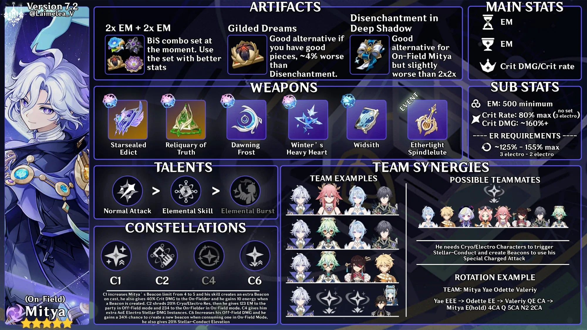

Build Mitya in breve
Electro · Catalyst · 5★ · versione 7.2
| Artifacts | 2pz Elemental Mastery + 2pz Elemental Mastery (il migliore per ora: usa i pezzi con le stats migliori) · Disenchantment in Deep Shadow (buono per Mitya on-field, poco sotto il 2+2) · Gilded Dreams (circa il 4% sotto Disenchantment) |
|---|---|
| Main stats | Sands Elemental Mastery · Goblet Elemental Mastery · Circlet CRIT DMG / CRIT Rate |
| Sub stats | Elemental Mastery 500+ · CRIT Rate max 80% (senza set, 3 Electro) · CRIT DMG ~160%+ |
| Energy Recharge | ~125%–155% (125% con 3 Electro, 155% con 2 Electro) |
| Weapons | Starsealed Edict (signature) · Reliquary of Truth · Dawning Frost · Winter’s Heavy Heart · Widsith · Etherlight Spindlelute (evento) |
| Talents | Normal Attack > Elemental Skill > Elemental Burst |
| Constellations | C1 Beacon da 4 a 5, Beacon extra al lancio, +40% CRIT DMG al personaggio in campo, 10 Energy per Beacon · C2 −20% RES Cryo/Electro, +123 Elemental Mastery al team (off-field) / +234 al personaggio in campo (on-field) · C4 istanze extra di danno Electro Stellar · C6 più danno off-field, 34% di probabilità di nuovo Beacon, +20% Stellar-Conduct Elevation |
| Team | Servono compagni Cryo/Electro per attivare lo Stellar-Conduct e creare i Beacon. Esempio: Mitya · Yae Miko · Odette · Valeriy |
Yae EEE → Odette EE → Valeriy QE CA → Mitya E (hold), 4CA, Q, 5CA, N2, 2CA
Kit, rotazioni, team e showcase sono nella guida estesa di Mitya.